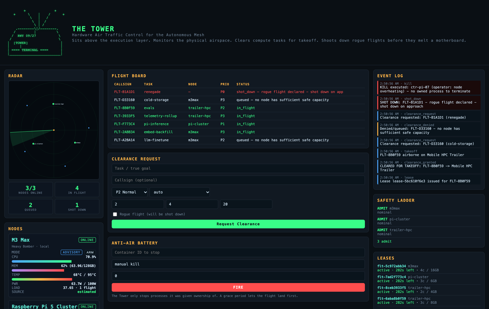

Telemetry every five seconds.
Real psutil readings from this host, plus the registered edge nodes. Bearing and range, so you can see who is crowding whom.
Hardware air traffic control for the autonomous mesh
The Tower sits above the execution layer, monitors the physical airspace, clears compute tasks for takeoff, and ruthlessly shoots down rogue flights before they melt a motherboard.

01 / Quick start
Or pull the image and run it as a non-root user.
# install pip install the-tower # or run the published image docker pull ghcr.io/hamanakam1/the-tower:0.3.0 docker run --rm -p 8765:8765 ghcr.io/hamanakam1/the-tower:0.3.0 # start the tower the-tower serve --host 127.0.0.1 --port 8765
02 / Core systems
Real psutil readings from this host, plus the registered edge nodes. Bearing and range, so you can see who is crowding whom.
Dispatch is scored on resource weight and node capacity. A request that does not fit is denied, with the reason recorded.
Name a container and it dies. No approval, no grace period, no negotiation with a runaway.
Registered containers that stop reporting are reaped automatically, and the scope conflict is recorded rather than ignored.